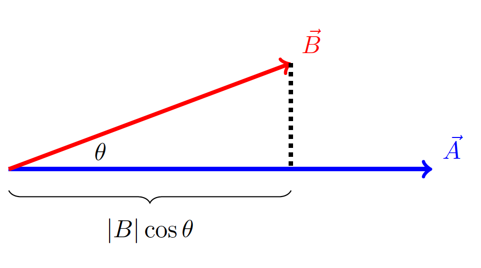
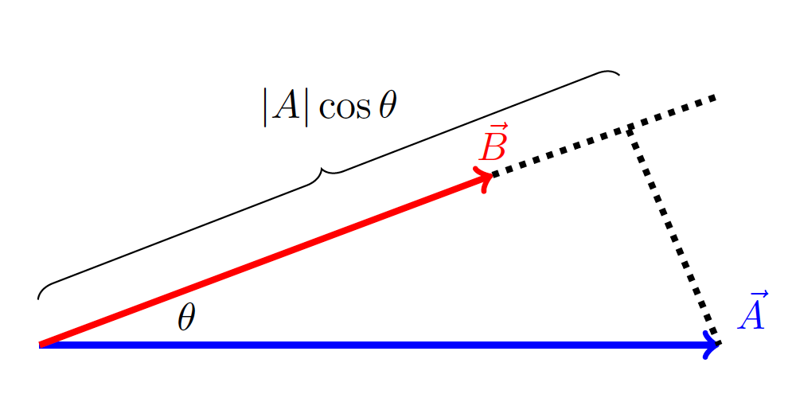
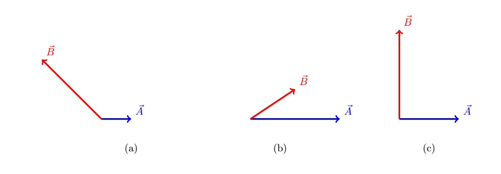
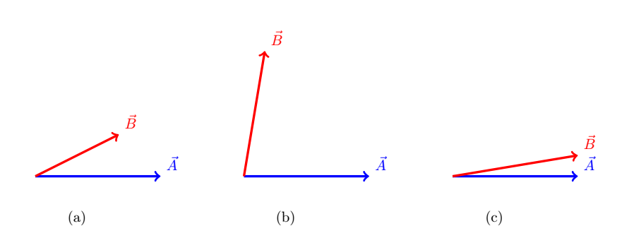

C2.10 Dot Product#
C2.10.1 Why We Need the Dot Product#
The dot product is one of two vector operations aside from the arithmetic operations we have seen so far that we will use in PHYS2210. The dot product is also known as the scalar product since it returns a scalar value.
The dot product is a very important operation in physics. For example, one of the most important concepts in Newtonian physics is the mechanical work or energy transfer by a force acting over a distance. This quantity is defined mathematically through a dot product.
As we have done so far with vectors, we will define the dot product in two forms: geometrically and analytically.
C2.10.2 Geometrical Defintion#
As the subtitle says, this definition relies on vector quantities we associate with the geometry of the vectors such as length and angle. We define the dot product between two vectors \(\vec{A}\) and \(\vec{B}\) as
where \(|\vec{A}|\) and \(|\vec{B}|\) are the magnitudes (or lengths) of the two vectors and \(\theta\) is the angle between the two vectors. From the notation, it may be evident why it is called the dot product.
Example 1
Consider a vector \(\vec{A}\) with a length of 5.0 units and a vector \(\vec{B}\) with a length of 3.0 units (let us ignore the units for now). The angle between the two vectors is \(\theta = 15^\circ\). The dot product between the two vectors is
We notice that this is just a number. There is no direction associated with this answer, and it is therefore a scalar value.
Example 2
Let us calculate the dot product between unit vectors. The magnitude of each unit vector is 1, and we know that \(\hat{e}_x\) and \(\hat{e}_y\) are perpendicular. With that in mind, we have the following relationships for the dot products between unit vectors:
since the angle between a vector and itself is \(0^\circ\).
The dot product is commutative!
and finally,
A vector is directed along the positive x-axis and has a magnitude of 5.0. A second vector has a magnitude of 8.0 and is directed at an angle of 32\(^\circ\) above the positive x-axis. Find the dot product between the two vectors.
C2.10.3 Interpretation#
The dot product is for most students relatively straightforward to calculate. However, the interpretation or its meaning is often missed in the process, or happily forgotten as it may not be important for the exam. Well, welcome to Doc Nielsen’s class where concept and understanding is a priority 🤓
I will try and explain it in two ways: a more mathematical form using geometric representation, and a word example using physics. I hope they together will provide you with a conceptual understanding of the dot product.
Approach 1#
First, let us consider the definition of the dot product:
but now let us put some parantheses around part of the equation:
From a trigonometric point of view, the value in the parantheses is the projection of vector \(\vec{B}\) onto the line of \(\vec{A}\) as shown in the figure below.
The dot product is this projection multiplied by the lenght of vector \(\vec{A}\). We can therefore interpretate the dot product as:
We could also have grouped the factors in the definition equation as (remember, the order of multiplication does not matter):
From a trigonometric point of view, the value in the parantheses is now the projection of vector \(\vec{A}\) onto the line of \(\vec{B}\) as shown in the figure below.
Obviously, these two result in the same number as it is the same equation, however, we can make the following observation: the projection of \(\vec{B}\) onto the line of \(\vec{A}\) is less than the projection of \(\vec{A}\) onto the line of \(\vec{B}\), but the scaling is larger in the former case than in the later case, resulting in exactly the same number.
Approach 2#
The work done by a mechanical force on an object is the dot product between the force acting on the object and the displacement of the object of which the force is acting over. Work is also a measure of energy transfer, in layman’s term we may say how much effort is done by the applied force.
Imagine we are pushing a box across a horizontal floor, but we are applying a force at an angle with respect to the horizontal. The dot product between the force and the displacement is a measure of the overlap between the two vectors: or how much effort is put into the horizontal displacement of the box by the force. We can imagine two scenarios:
(1) a person supplying a larger force applied over a shorter distance or (2) a person supplying a smaller force applied over a larger distance, both can have put equal amount of effort (or transferred the same amount of energy) into moving the box. These scenarios are equivalent to the projection of vectors onto each other as in the previous example.
NOTE: when we in daily life say something like: “it takes a lot of effort”, we are actually referring to that it requires a lot of energy transfer 🤓
C2.10.4 Analytic Definition#
In the analytic definition, we work in terms of the components of the vectors. To derive an equation, we will write the two vectors in terms of their components and unit vectors. We will restrict ourself to 2D for simplicity, but it is straightforward to extend into 3D. Take a deep breath!
Consider the vectors
and
The dot product is then
Now we distribute the factors through the dot product:
Since the dot product is an operation between vectors only, it will only act between the unit vectors and we can move the components outside the dot products:
We can use the results from Example 2 above regarding the dot products among unit vectors, and we get
We can then write the final result as
Given two vectors: \(\vec{A} = \begin{bmatrix} -1.0 \\ 4.0 \\ \end{bmatrix}\) and \(\vec{B} = \begin{bmatrix} 2.0 \\ 5.0 \\ \end{bmatrix}\), calculate the dot product between the two vectors.
Given two vectors: \(\vec{A} = -3.0\hat{i} + 2.0\hat{j}\) and \(\vec{B} = -1.0\hat{i} + 2.0\hat{j}\), calculate the dot product between the two vectors.
C2.10.5 Important Observations#
We can make a few observations regarding the dot product that will be very useful throughout the rest of the semester.
1. Importance of Projection#
We notice that only the projected component of one vector onto the other vector is important while the perpendicular component plays no role in the dot product.
2. Magnitude of a Vector#
If we take the dot product between a vector and itself, we get the square of the magnitude of the vector:
since \(|\vec{A}|^2 = A^2_x + A^2_y\).
3. Angle between Two Vectors#
The dot product becomes a tool to find the angle between two vectors
Apply Important Observation 1 to the following problem. Consider the three cases. Based on the observation determine, by inspection only, whether the dot product will be: negative, zero, or positive. 
Apply Important Observation 1 to the following problem. Consider the three sketches. Based on the observation determine, by inspection only, the ranking of the dot product from smallest to largest. 
Apply Important Observation 3 to the following problem. Given two vectors: \(\vec{A} = \begin{bmatrix} -1.0 \\ 4.0 \end{bmatrix}\) and \(\vec{B} = \begin{bmatrix} 2.0 \\ 5.0 \end{bmatrix}\), find the angle between the two vectors. HINT: find the dot product first, then the magnitudes, and then apply the observation. As an after thought: how would you have found the angle between them if you did not know of the dot product?
C2.10.6 Applications#
Work (or transfer of energy) done by a force is defined as the dot product between the applied force to an object and the displacement of the object.
Consider you are out shopping and are pushing a shopping cart across a distance of 30.0 m along a horizontal floor. You are applying a force of 20.0 N on the handle of the shopping cart that is directed in the same direction as motion, but angled 20.0\(^\circ\) downwards as well.
Make a skecth of the two vectors: force and displacement, and calculate how much work, or energy you transferred to the shopping cart during this distance. NOTE: the unit Nm (Newton meter) is defined as J (Joule).
The power is a measure of the rate of energy transfer (or how much work done over a certain time interval). One way to calculate instantaneous power is the dot product between the applied force \(\vec{F}\) and the velocity \(\vec{v}\) of the object:
Consider the box problem above. If you move the shopping cart at 2.0 m/s. What is the instantanous power delivered to the shopping cart?